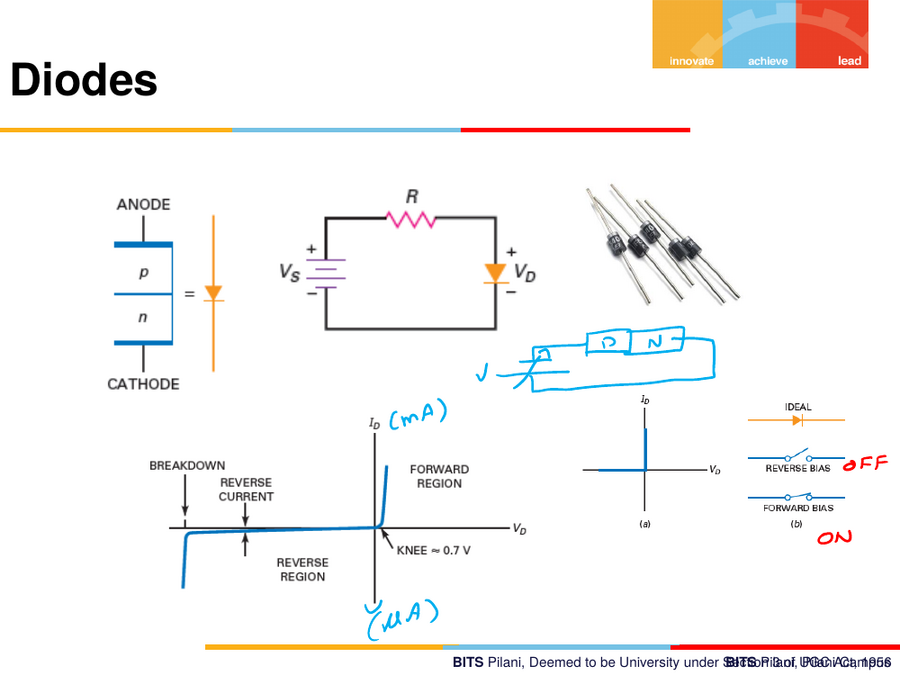
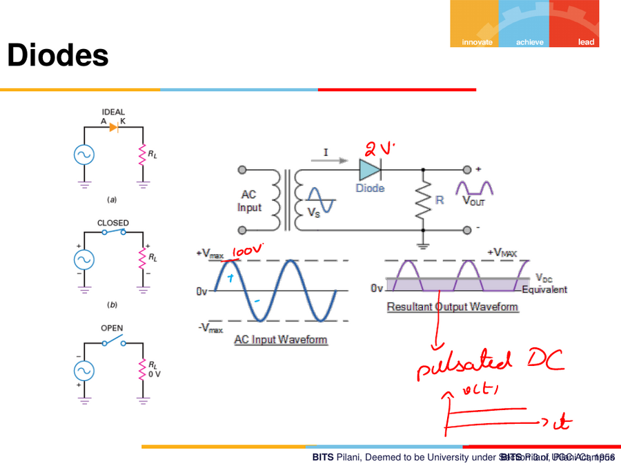
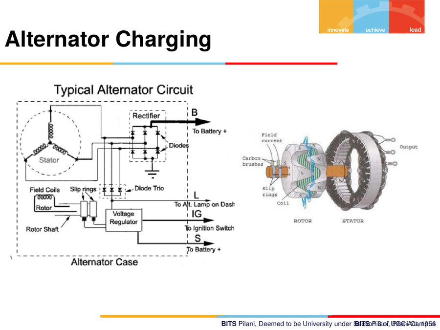

10. Diodes & Applications
10.1 Diode basics
A diode is a single P–N junction packaged with two terminals:
- Anode — the P side
- Cathode — the N side (marked with a band on the physical component)
Anode ──►|── Cathode (arrow points in the direction conventional
current can easily flow — anode to cathode)
Circuit: source V_S in series with resistor R and diode, output
V_D across the diode.

Diode I–V characteristic
- Forward region: once
V_Dexceeds the knee voltage (~0.7 V for silicon), forward current rises steeply (large current for small further voltage increase). - Reverse region: only a tiny reverse current (µA range) flows, essentially constant, until...
- Breakdown region: beyond the breakdown voltage, reverse current increases sharply (this is destructive for ordinary diodes, but is exploited deliberately in Zener diodes — not covered in this lecture).
Ideal switch model recap: - Diode forward-biased ("ON") → acts like a closed switch. - Diode reverse-biased ("OFF") → acts like an open switch.
10.2 Ideal / practical diode states
| State | Symbol behaviour | Voltage across | Current |
|---|---|---|---|
| Ideal, forward | Short (closed switch) | ≈ 0 V | Flows freely |
| Ideal, reverse | Open (open switch) | Full applied V | ≈ 0 A |
| Practical, forward (< knee) | Open | < 0.7 V | ≈ 0 A |
| Practical, forward (≥ knee) | Conducting | ≈ 0.7 V (silicon) | Rises steeply |

10.3 Diode as a rectifier — AC to DC
An AC input through a diode: the diode only conducts during the half-cycle
where it is forward-biased, so a resistor load R sees only the positive
(or negative, depending on orientation) half of the input waveform.
AC Input → [Diode] → Half-wave rectified output across R
The output waveform is the input waveform's positive half only, with the negative half clipped to (approximately) zero — this is half-wave rectification, the simplest form of AC→DC conversion.
10.4 Automotive application — Alternator charging circuit
A typical alternator circuit:
Rotor (field coils, via slip rings) → Stator (3-phase windings)
→ Rectifier (diode trio / diode bridge) → B (to Battery +)
→ Voltage Regulator → F (field), IG (to Ignition switch),
S (to Battery +, sense)
- The rotor is an electromagnet spun by the engine (via belt), carrying field current through slip rings and carbon brushes.
- The stator windings (fixed) have an AC voltage induced in them as the rotor's magnetic field sweeps past (generator action — see note 06 §6.5, fact #4).
- A diode trio / rectifier bridge converts this 3-phase AC output to pulsating DC.
- The voltage regulator controls rotor field current to hold the charging voltage roughly constant regardless of engine RPM.

Waveform note (from board annotation): the rectified alternator output is not smooth DC — it's pulsating DC, with ripple at multiples of the AC frequency; smoothing (via capacitors, or relying on battery buffering) is what makes it usable as a steady charging source.
10.5 Diode summary — key facts to remember
- A diode conducts (forward biased) when anode is more positive than cathode by at least the knee voltage (~0.7 V for silicon, ~0.3 V for germanium — not covered here but a common comparison point).
- A diode blocks (reverse biased) when the cathode is more positive than the anode — until its reverse breakdown voltage is exceeded.
- The rectifier function (converting AC to pulsating DC) is the basis of automotive alternator charging systems and general AC-to-DC power supplies.